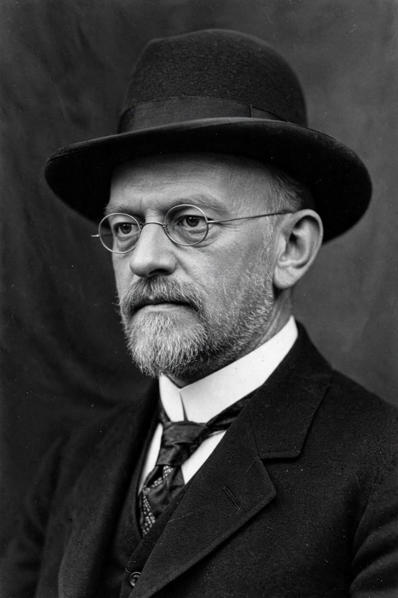

Hilbert's problems
| Hilbert's problems | |
|---|---|
 | |
| Presented | 8 August 1900, Paris |
| Presenter | David Hilbert |
| Number | 23 problems |
| Venue | International Congress of Mathematicians |
Hilbert's problems are twenty-three problems in mathematics published by the German mathematician David Hilbert in 1900. Presented at the International Congress of Mathematicians in Paris on 8 August 1900 (ten in the spoken lecture, the rest in the published proceedings), they were unsolved at the time and proved enormously influential in directing 20th-century mathematics.
The problems
- Continuum hypothesis — shown independent of ZFC by Gödel (1940) and Cohen (1963).
- Consistency of arithmetic — undermined by Gödel's incompleteness theorems (1931).
- Equality of volumes of tetrahedra of equal base and height — solved by Max Dehn (1900), the first to fall.
- Shortest path problem — largely resolved through differential geometry.
- Lie's groups without differentiability assumptions — resolved by Andrew Gleason and others (1950s).
- Axiomatisation of physics — partially realised, especially for probability and quantum mechanics.
- Transcendence of certain numbers — solved by the Gelfond–Schneider theorem (1934).
- The Riemann hypothesis — still open, the most famous of the set.
- Laws of reciprocity in number fields — largely solved via class field theory.
- Solvability of arbitrary Diophantine equations — shown impossible by Matiyasevich (1970), completing work of Davis, Putnam and Robinson.
- Quadratic forms with algebraic coefficients — solved by Hasse and Siegel.
- General reciprocity and class field theory — extended by Artin and others.
- Impossibility of solving the general quintic-like problem for 7th-degree equations with continuous functions — resolved by Arnold and Kolmogorov (1957).
- Rigorous foundations of Schubert's enumerative calculus — partially solved by van der Waerden and later Weil.
- Questions on algebraic curves and surfaces — partially solved.
- Representation of definite forms by squares — solved by Hasse and Siegel.
- Finiteness of complete systems of invariants — solved by Hilbert himself and Emmy Noether's generalisations.
- The counting problem of algebraic geometry — still partly open.
- Analytic and topological foundations — largely solved.
- Problems of the calculus of variations — the 19th–23rd problems spurred modern PDE theory; the 23rd remains broad and open-ended.
Legacy
The problems set the agenda for a century: fully or largely resolved include the 3rd, 5th, 7th, 10th, 11th, 13th, 14th, 17th, 18th, 21st and 22nd; the 8th (Riemann hypothesis and Goldbach) remains open and is also a Millennium Prize Problem. In 2000 the Clay Mathematics Institute consciously echoed Hilbert with its seven Millennium problems.